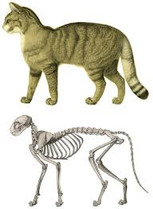

İlk Temas ve Kendi Kendini Evcilleştirme: Modern DNA analizleri, dünyadaki tüm evcil kedilerin (Felis catus) tek bir atadan, Ortadoğu'da yaşamış olan Afrika Yaban Kedisi'nden (Felis lybica) geldiğini kanıtlamıştır. Yaklaşık 10.000 yıl önce Tarım Devrimi ile birlikte insanlar tahıl depolamaya başladı. Bu depolar fareleri, fareler de ormanlık alandaki vahşi kedileri çekti. Kediler insan yerleşimlerinin etrafında yaşamaya alıştı ve agresif olmayanlar insanlardan daha çok yemek artığı bularak hayatta kaldı.
Kıbrıs Keşfi: Uzun süre kedilerin ilk kez Antik Mısır'da evcilleştirildiği düşünüldü. Ancak 2004 yılında Kıbrıs'ta, insanla yan yana gömülmüş 9.500 yıllık bir kedi iskeleti bulundu. Kıbrıs'a kedilerin yüzerek gidemeyeceği göz önüne alındığında, insanların onları teknelerle yanlarında taşıdığı kanıtlandı.
Karanlık Çağlar ve Cadı Avı: Orta Çağ Avrupası'nda kediler (özellikle siyah olanlar) cadılıkla ilişkilendirildi ve toplu halde itlaf edildi. Kedilerin sayısının aniden azalması, veba mikrobunu taşıyan farelerin inanılmaz bir hızla çoğalmasına ve milyonlarca insanın ölümüne neden olan Kara Veba'nın yayılmasına zemin hazırladı.
Modern Irkların Doğuşu: Bugün bildiğimiz Siyam, Fars, Scottish Fold gibi spesifik ırkların çoğu son 150 yıl içinde, İngiltere'deki Viktorya dönemi kedi şovlarıyla birlikte, insanların genetik seçilime müdahale etmesiyle ortaya çıkmıştır.
.jpg)
Görme Anatomisi (Tapetum Lucidum): Kedilerin gözlerinin arkasında tapetum lucidum adı verilen ayna benzeri bir hücre tabakası bulunur. Gözden giren ışık bu tabakaya çarpar ve retinadan ikinci kez geçer. Bu sayede insanların zifiri karanlık sandığı ortamlarda bile avlanabilirler. Göz bebeklerinin dikey bir elips şeklinde olmasının nedeni, parlak güneş ışığında göze giren ışık miktarını kusursuz bir şekilde kısıtlayabilmektir.
Bıyıklar (Vibrissae) Sadece Yüzde Değildir: Bıyıklar normal tüy değildir; kökleri kedinin sinir sistemine doğrudan bağlı, kan damarlarıyla çevrili son derece hassas duyu organlarıdır. Bir kedi sadece burnunda değil, gözlerinin üstünde, çenesinin altında ve ön bacaklarının arkasında da (karpal bıyıklar) bıyıklara sahiptir. Bıyıklar havadaki en ufak basınç değişikliğini bile algılayarak karanlıkta nesnelerin yerini ve boyutunu saptar.
Köprücük Kemiği ve Omurga: İnsanların köprücük kemikleri omuzları birbirine bağlar. Kedilerde ise köprücük kemiği serbesttir (kemiklere değil sadece kaslara bağlıdır). Bu muazzam anatomik fark, bir kedinin kafasının sığdığı her dar aralıktan tüm vücudunu geçirebilmesini sağlar.
Jacobson Organı:
